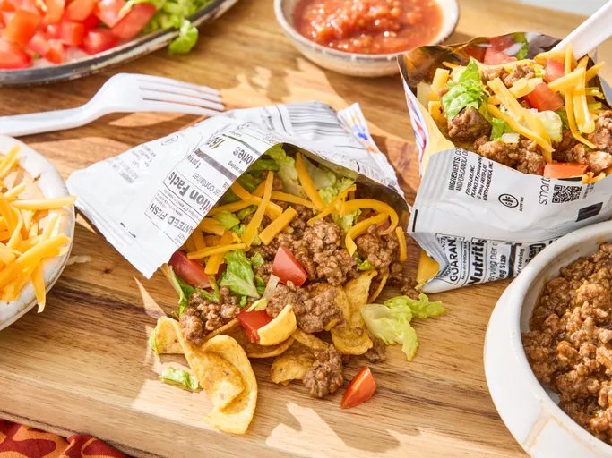

Taco Recipe

Home
Description
This is a fun, portable dish right inside a baf of chips. Reviewers report that their kids love eating this for dinner.
Ingredients
- 1 pound lean ground beaf
- 3/4 cup water
- 1 (1 ounce) pacakge taco seasong mix
- 4 (2.5 ounce) packages corn chips
- 2 cups shredded lettuce
- 1 cup shtredded Cheddar cheese
- 1 chopped fresh tomatoe
- 1/2 cup sour cream
- 1/3 cup salsa
Steps
- Gather all ingredients
- Cook and stir ground beef in a large skillet over medium heat until browned and crumbly, 7 to 10 minutes. Drain excess oil. Mix in water and taco seasoning. Bring to a boil, then reduce the heat and simmer for 5 minutes, stirring ocassionally.
- Gently crush corn chips in the sealed bags. Snip one top and one bottom corner off each bag, then cut open along the side edge.
- Spoon equal amounts of beef, lettuce, Cheddar, tomato, sour cream, and salsa into each back on top of crushed chips.
- Serve in the bag and eat using a fork. Enjoy!